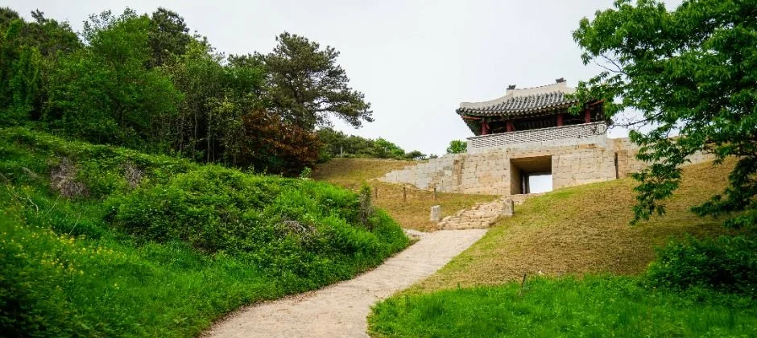
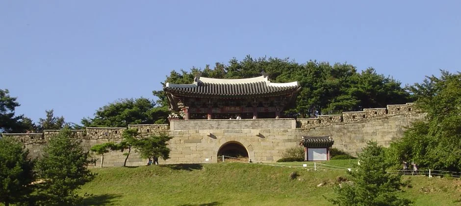
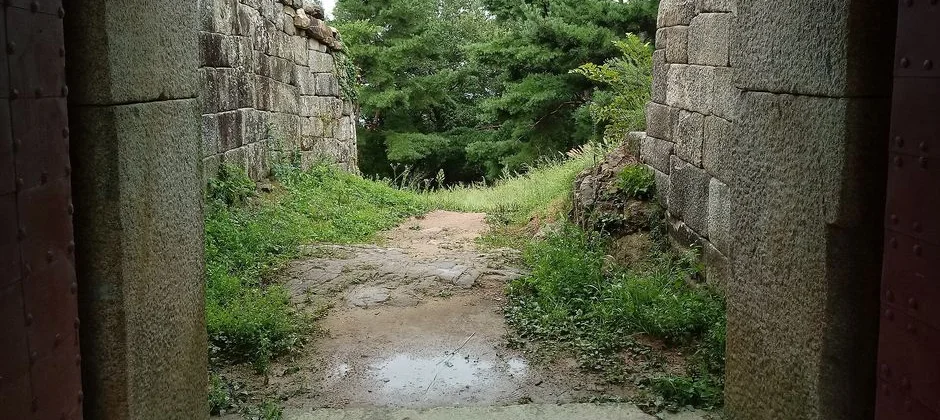
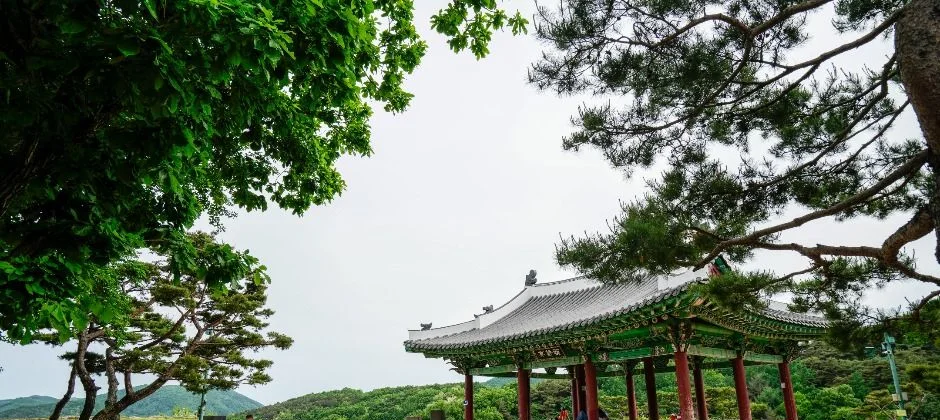
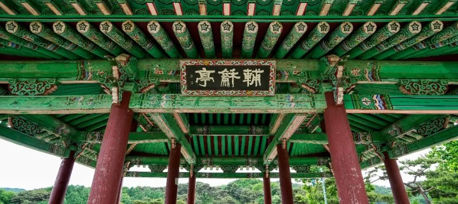
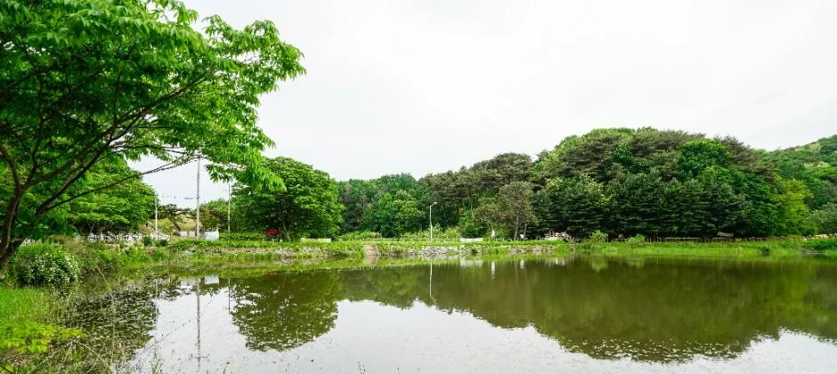
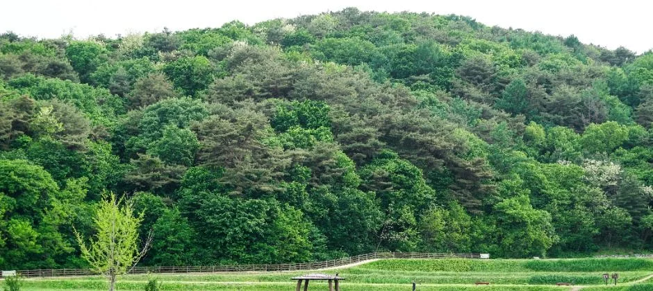
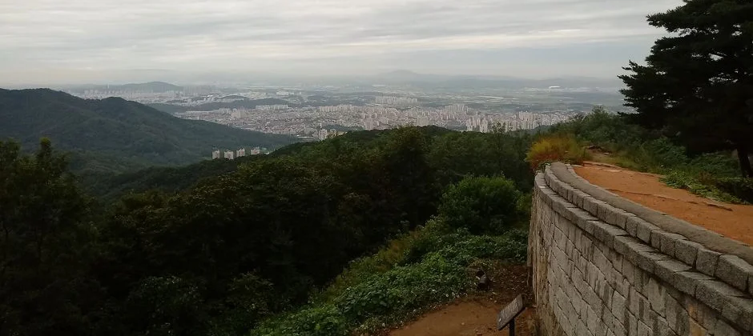
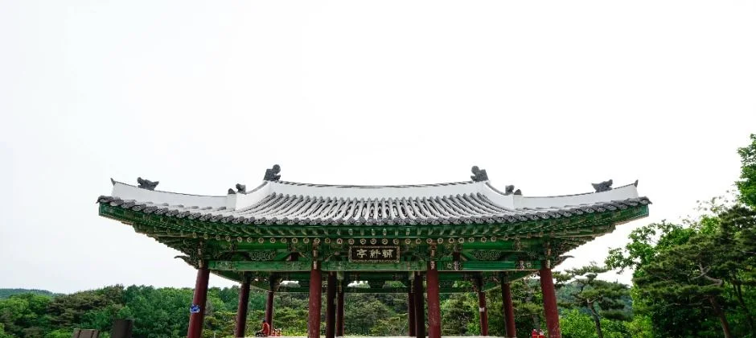

▲ 상당산성 성벽. 한국관광공사 제공 사진으로 초여름에 촬영돼 가을 단풍은 담기지 않았다 (사진=한국관광공사)
2026년 10월 16일 현재, 상당산성 가을 나들이를 계획한다면 먼저 알아둘 것이 있다. 이 글은 국가유산포털의 사적 안내판 설명과 한국관광공사 관광정보(TourAPI)의 상당산성 항목을 기준으로 정리했고, 청주시 관광 안내 페이지에서는 입장료·주차요금 표기를 찾지 못했다. 확인한 것과 못 한 것을 구분해 적었다. 성곽을 한 바퀴 도는 일은 어렵지 않지만, 성안 주차와 공휴일 혼잡은 미리 알아둘수록 편하다. 같은 산성 가을 산책이라도 경기 남한산성은 유료 주차와 셔틀이 따로 안내되는 반면, 상당산성은 성격이 꽤 다르다.
1. 상당산성은 어떤 성인가 — 둘레 4.2km 석축산성, 사적 제212호
▲ 산비탈을 따라 이어지는 상당산성의 석축 성벽. 촬영 시기가 초여름이라 숲이 푸르다 사진=한국관광공사
한국관광공사 안내에 따르면 상당산성은 삼국시대 백제의 상당현에서 이름이 유래한 것으로 보이는 포곡식 석축산성이다. 처음 쌓은 시기는 명확하지 않다. 관광공사 안내는 백제 때 토성에서 비롯됐을 것으로 보고, 국가유산포털 안내판은 통일신라 초기에 쌓은 서원술성과 연계해 그 무렵 축조됐다는 설도 있다고 적는다. 지금 모습의 바탕은 조선 시대로, 선조 29년(1596) 임진왜란 중 임시로 고쳤고 숙종 42년(1716)부터 영조 23년(1747)까지 대대적으로 수리·복원했다. 남문 등 성문과 성벽에는 당시 공사 관계자의 이름과 관직명이 새겨져 있다고 한다. 관광공사 안내에는 남문 문루가 1977년에 복원됐다고 나온다(국가유산포털 안내판은 동문 진동문이 1977~1978년 보수 때 문루까지 복원됐다고 적는다). 청주 시내에서 올려다보면 상당산이 띠를 두른 듯 성벽이 이어져 청주를 상징하는 대표 건축물로 소개된다.
| 항목 | 내용 |
|---|---|
| 소재지 | 충북 청주시 상당구 성내로 70 |
| 지정 | 사적 제212호(국가유산포털) |
| 형식 | 포곡식 석축산성 |
| 성 둘레 | 4.2km(국가유산포털 안내판). 관광공사 안내문에는 4,400m와 4.2km가 함께 나옴 |
| 면적 | 12.6ha |
| 성문 | 동문·서문·남문 3곳, 암문 2곳(동북·서남쪽) |
| 개방 | 상시 개방, 연중무휴 |
| 문의 | 043-201-0202(한국관광공사 안내 기재), 043-201-0001(청주시 관광 안내 페이지 기재) |
관광공사 안내 안에서는 성벽 높이가 4.7m, 4~5m로, 둘레가 4,400m, 4.2km로 표기가 갈린다. 반면 사적을 관리하는 국가유산포털의 종합안내판은 돌로 쌓은 성벽의 둘레를 4.2km로 적고 있어 이 글은 이 값을 기준으로 삼았다. 일부 언론에는 4.4km로 적힌 곳도 있는데, 관광공사 안내문의 4,400m가 퍼진 것으로 보인다. 국가유산포털 상당산성 바로가기
2. 성문 구성 — 공남문·진동문·미호문과 암문 둘

▲ 산책로 끝에 성문이 보이는 구간. 어느 문인지는 사진만으로 단정하지 않았다 사진=한국관광공사
상당산성에는 남문 공남문, 서문 미호문, 동문 진동문 세 개의 성문이 있고, 동쪽과 남쪽에 각각 암문이 하나씩 있다. 남문은 무사석으로 홍예문을 만들고 그 위에 목조 문루를 올렸다. 안내문 기준 성문 높이는 3.5m, 너비 4.2m다. 동문과 서문은 높이 2.7m, 너비 2.8m로 남문보다 작다. 국가유산포털 안내판은 성문이 3곳이고 북쪽에는 문이 없다고 설명한다. 서문 미호문은 문밖 양쪽으로 성벽을 돌출시켜 방어에 유리하게 만들었고, 호랑이가 뛰기 전 움츠린 지형의 목 부분에 문을 세웠다는 이야기에서 이름(弭虎門)이 왔다고 한다. 서문 문루는 1978년에 복원했으나 지반 침하로 변형돼 2015년에 해체한 뒤 고증을 거쳐 다시 복원했다. 동문 진동문은 통로 위에 길고 평평한 돌을 얹은 평거형 성문이다. 성안의 동장대는 보화정(輔和亭), 서장대는 제승당(制勝堂)으로도 불리며, 서장대는 1995년 발굴 조사로 확인된 건물터를 토대로 2014년에 복원했다. 성안에는 예전 5개의 연못과 3개의 사찰, 관청 건물과 창고가 있었다고 전해진다.

▲ 홍예문 위에 문루를 올린 성문과 이어진 성벽. 2004년 10월 초 촬영본으로 단풍은 들지 않았다 사진=Hutch1225, 위키미디어 커먼즈(퍼블릭 도메인)

▲ 철판을 덧댄 성문 문짝 사이로 본 성안 길. 위키미디어 파일 설명상 서문 쪽이며 2018년 8월 촬영이라 숲이 푸르다 사진=Gcd822, 위키미디어 커먼즈(CC BY-SA 4.0)
| 구분 | 이름·규모 | 메모 |
|---|---|---|
| 남문 | 공남문(높이 3.5m·너비 4.2m) | 홍예문 위 문루, 1977년 복원 |
| 서문 | 미호문(높이 2.7m·너비 2.8m) | 문루 1978년 복원, 2015년 해체 후 재복원 |
| 동문 | 진동문(높이 2.7m·너비 2.8m) | 평거형 성문, 1977~1978년 보수 때 문루 복원 |
| 암문 | 동북 암문·서남(남) 암문 | 비밀 출입구 성격의 작은 문. 동북 암문에는 1720년 축조를 알리는 새김이 남아 있음 |
| 장대 | 동장대(보화정)·서장대(제승당) | 지휘 시설. 서장대는 2014년 복원 |
💡 먼저 결론
상당산성은 상시 개방, 연중무휴로 안내되며 주차는 가능으로 표기돼 있다. 다만 입장료와 주차요금은 한국관광공사 항목에 숫자가 없어 공식 확인이 되지 않았다. 일부 언론·여행 정보는 입장료 없음, 주차 무료로 적고 있으니 현장 안내를 우선하자.
3. 성곽 둘레길 — 한 바퀴 걸으면 얼마나 걸릴까

▲ 소나무와 어우러진 성안의 정자 누각. 가을에는 주변 낙엽수 색이 달라진다 사진=한국관광공사
성곽은 상당산 능선을 따라 도는 원형 코스다. 길이는 국가유산포털 안내판 기준 4.2km다. 한국관광공사 자료에는 소요 시간이 없어, 아래 시간은 언론 보도에 반복 등장하는 값이다. 한 바퀴에 대체로 1시간 30분~2시간이 걸린다는 설명이 일반적이고, 경사가 심하지 않아 초보자도 걷기 편하다는 평가가 많다. 반대로 말하면 사진 찍고 쉬는 시간까지 넣으면 2시간 반도 잡는 편이 낫다. 이 값은 청주시 공식 안내로 확인된 것이 아니다.
구간마다 볼거리도 다르다. 국가유산포털 안내판에 따르면 산성 정상부 평탄지에는 포루 터가 두 곳 있다. 포루는 치성 위에 포를 배치하고 지은 군사 시설로, 영조 1년(1725)에 15곳을 지었다는 기록이 있다. 포루 터 1은 조사 결과 정면 2칸·측면 1칸 규모의 건물터가, 포루 터 2(옛 지도에는 공북정으로 표기)는 정면 4칸·측면 2칸으로 추정되는 건물터가 확인됐다. 성벽에는 안쪽 물을 밖으로 내보내는 수구가 남서쪽·서쪽·북쪽에 각각 하나씩 남아 있다. 남쪽에는 구룡사 터가 있다. 구룡사는 숙종 46년(1720)에 승려 도천이 창건한 절로, 성을 쌓고 지키는 승병이 머물렀다고 하며 사적비는 지금 남문 옆에 옮겨져 있다. 한 언론은 남문에서 서문 쪽으로 오르면 청주 시내가 내려다보인다고 소개했다.

▲ 성안 정자의 처마 밑. 편액에 輔和亭(보화정)이 적혀 있다. 국가유산포털은 동장대를 보화정으로도 부른다고 설명한다 사진=한국관광공사
| 방식 | 예상 시간 | 특징 |
|---|---|---|
| 성곽 한 바퀴 | 약 1시간 30분~2시간 | 남문·서문·동문을 모두 지남(국가유산포털 둘레 4.2km) |
| 성문·정자만 짧게 | 약 30분~1시간 | 주차장 가까운 구간만 왕복(추정) |
| 걷기 후 성안 마을 휴식 | +1시간 안팎(추정) | 성안 한옥마을 식당가 이용 |
성을 한 바퀴 돌고 내려오면 성안에 전통 한옥마을이 조성돼 있어 식사나 전통주 한 잔으로 쉬어 갈 수 있다고 소개된다. 이 글에서는 상호는 적지 않는다. 문화관광해설사가 상주해 언제든 해설을 들을 수 있다고 안내돼 있으니 시간대는 현장에서 확인하자.

▲ 성안 저수지. 옛 수구 자리에 저수지가 만들어져 있다고 안내된다 사진=한국관광공사
4. 가을에 갈 때 — 풍경 시기와 사진에 대한 솔직한 설명

▲ 성안 초지. 사진은 초여름 촬영이라 단풍은 담기지 않았다 사진=한국관광공사
이 글의 사진은 한국관광공사 제공본(초여름)과 위키미디어 커먼즈 사진(2004년 10월 초, 2018년 8월)이며 단풍이 든 장면은 없다. 가을 단풍 사진을 구하지 못했고, 가을 절정 시기에 대한 청주시·관광공사의 공식 예측은 확인하지 못했다. 그래서 시기를 단정하지 않는다. 참고로 산림청이 발표하는 전국 단풍 예측은 지역 단위여서 상당산성 한 곳의 절정일과는 다르다. 단풍 절정은 예측일 뿐이고, 해마다 기온과 강수에 따라 달라진다. 성벽이 능선을 따라 이어지기 때문에 잎이 물드는 시기에는 성벽 위에서 시내가 내려다보이는 조망이 장점으로 꼽힌다.

▲ 성벽 위에서 내려다본 청주 시내 방면 조망. 2018년 8월 촬영이라 단풍은 없다 사진=Gcd822, 위키미디어 커먼즈(CC BY-SA 4.0)
✅ 가기 전 체크리스트
· 개방: 상시 개방, 연중무휴(한국관광공사 안내)
· 입장료·주차요금: 공식 숫자 미확인, 현장 안내 우선
· 코스: 둘레 4.2km(국가유산포털), 한 바퀴 1시간 30분~2시간(언론 기준)
· 준비: 운동화와 물, 해가 짧아지는 가을엔 해지기 전 하산
· 공휴일은 주차장이 가득 찬다는 보도가 있음
5. 자차 경로와 주차 — 청주 시내에서 어떻게 가나

▲ 편액에 輔和亭이 적힌 성안 정자의 정면. 국가유산포털은 이 이름을 동장대와 같은 건물로 설명한다 사진=한국관광공사
주소는 청주시 상당구 성내로 70이다. 한 지역 언론은 청주 시내(중앙공원)에서 자차로 약 20~30분이라고 소개했고, 시내에서는 산성로를, 중부고속도로 쪽에서는 오창 분기점으로 나와 512번 지방도를 탄 뒤 산성교차로에서 성내로로 갈아타라고 적었다. 시간은 교통 상황에 따라 달라지니 내비게이션으로 확인하자. 주차는 한국관광공사에 가능으로 기재돼 있고, 한 언론은 성 안팎에 주차장이 여럿이며 공휴일에는 거의 찬다고 전했다. 남쪽 관리소 근처에 넓은 주차장이 있다는 설명도 있다. 요금은 공식 확인되지 않았다.
| 수단 | 내용 | 확인 수준 |
|---|---|---|
| 자차 | 성내로 70, 시내에서 약 20~30분 | 단일 언론 보도 |
| 시내버스 | 862번(단)이 상당산성 쪽을 기점·종점으로 한다는 보도와 노선 정보 | 언론·노선 정보 사이트에서 확인, 배차는 앱으로 확인 |
| 주차 | 가능, 요금 미확인 | 관광공사는 가능 여부만 표기 |
대중교통은 862번 버스가 상당산성 종점에서 산성남문·산성입구 정류장을 거친다는 노선 정보가 있지만 청주시 공식 노선도로 검증하지 못했고 배차 시간도 확인하지 못했다. 방문 직전 지도·버스 앱으로 확인하는 것이 낫다. 가을 주말에는 차를 가져가기보다 평일 오전을 권한다.
6. 남한산성과 비교 — 충북의 성곽 산책
경기 남한산성은 행궁 관람료와 주차요금, 무료 셔틀이 공식 자료에 정리돼 있는 반면, 상당산성은 공식 요금표가 눈에 띄지 않고 개방 상태 위주로 안내된다. 남한산성은 하루 일정을 잡아야 하는 대형 탐방이지만, 상당산성은 반나절이면 충분하다. 청주를 오가는 다른 여정이라면 자차 코스 기사도 참고할 만하다. 청주 산림박람회와 영동 정원박람회 자차 코스.
| 항목 | 상당산성(청주) | 남한산성(경기) |
|---|---|---|
| 성곽 둘레 | 4.2km | 12.4km(본성 8.9km·외성 3.2km 등, 한국관광공사 자료) |
| 개방 | 상시, 연중무휴 | 센터 공식 시간 안내 |
| 요금 안내 | 공식 숫자 미확인 | 성곽 0원, 행궁 2,000원 등 |
| 성격 | 반나절 성곽 산책 | 하루 일정 가능한 대형 탐방 |
7. 정리
2026년 10월 16일 현재, 상당산성은 한국관광공사 안내상 상시 개방·연중무휴이며 둘레는 국가유산포털 안내판 기준 4.2km, 성문은 공남문·미호문·진동문 3곳과 암문 2곳이다. 한 바퀴 1시간 30분~2시간은 언론 보도 기준이다.
입장료·주차요금·버스 노선과 가을 절정 시기는 공식 확인이 되지 않았으니 청주시청과 현장 안내를 우선하자. 이 글의 사진은 초여름·여름 촬영본이다.